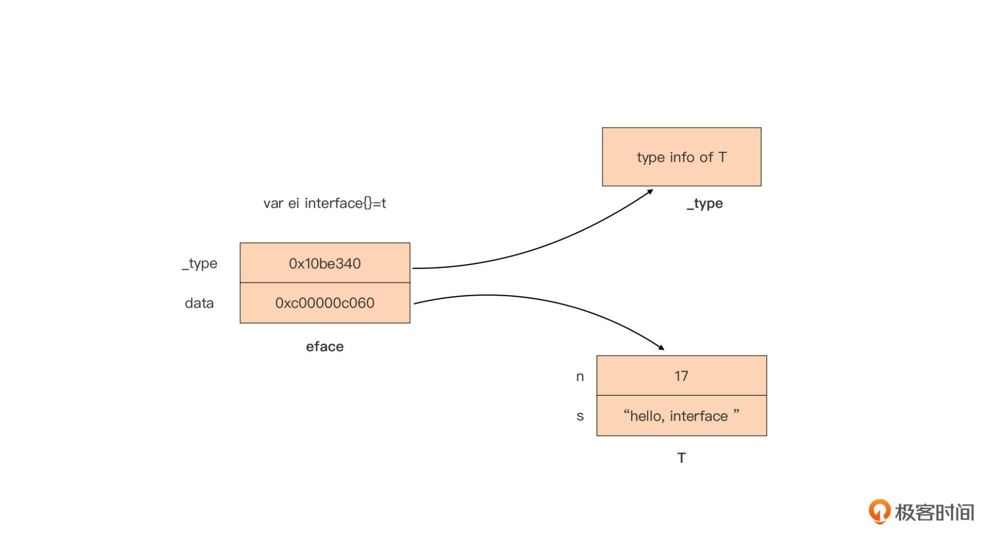
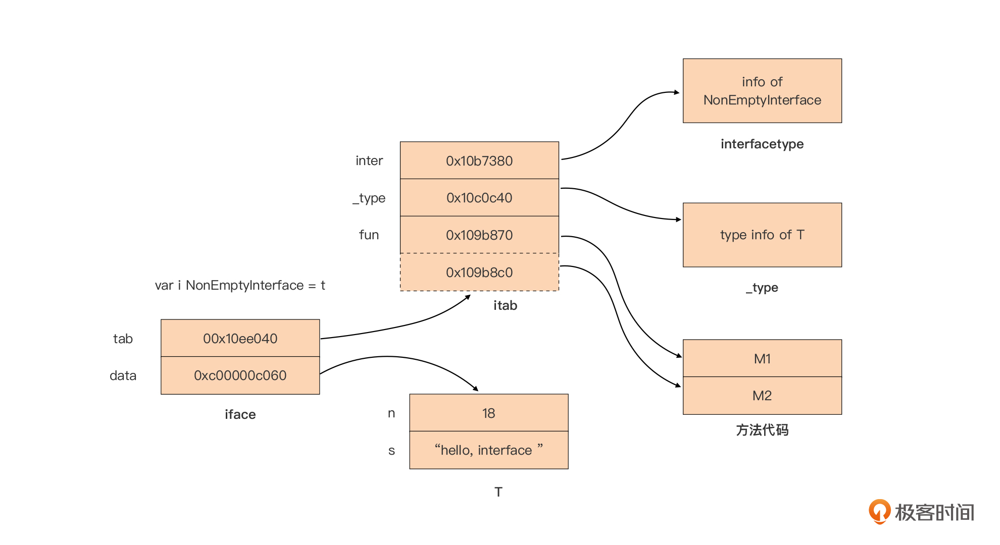

- 00 开篇词 这样入门Go，才能少走弯路.md.html
- 01 前世今生：你不得不了解的Go的历史和现状.md.html
- 02 拒绝“Hello and Bye”：Go语言的设计哲学是怎么一回事？.md.html
- 03 配好环境：选择一种最适合你的Go安装方法.md.html
- 04 初窥门径：一个Go程序的结构是怎样的？.md.html
- 05 标准先行：Go项目的布局标准是什么？.md.html
- 06 构建模式：Go是怎么解决包依赖管理问题的？.md.html
- 07 构建模式：Go Module的6类常规操作.md.html
- 08 入口函数与包初始化：搞清Go程序的执行次序.md.html
- 09 即学即练：构建一个Web服务就是这么简单.md.html
- 10 变量声明：静态语言有别于动态语言的重要特征.md.html
- 11 代码块与作用域：如何保证变量不会被遮蔽？.md.html
- 12 基本数据类型：Go原生支持的数值类型有哪些？.md.html
- 13 基本数据类型：为什么Go要原生支持字符串类型？.md.html
- 14 常量：Go在“常量”设计上的创新有哪些？.md.html
- 15 同构复合类型：从定长数组到变长切片.md.html
- 16 复合数据类型：原生map类型的实现机制是怎样的？.md.html
- 17 复合数据类型：用结构体建立对真实世界的抽象.md.html
- 18 控制结构：if的“快乐路径”原则.md.html
- 19 控制结构：Go的for循环，仅此一种.md.html
- 20 控制结构：Go中的switch语句有哪些变化？.md.html
- 21 函数：请叫我“一等公民”.md.html
- 22 函数：怎么结合多返回值进行错误处理？.md.html
- 23 函数：怎么让函数更简洁健壮？.md.html
- 24 方法：理解“方法”的本质.md.html
- 25 方法：方法集合与如何选择receiver类型？.md.html
- 26 方法：如何用类型嵌入模拟实现“继承”？.md.html
- 27 即学即练：跟踪函数调用链，理解代码更直观.md.html
- 28 接口：接口即契约.md.html
- 29 接口：为什么nil接口不等于nil？.md.html
- 30 接口：Go中最强大的魔法.md.html
- 31 并发：Go的并发方案实现方案是怎样的？.md.html
- 32 并发：聊聊Goroutine调度器的原理.md.html
- 33 并发：小channel中蕴含大智慧.md.html
- 34 并发：如何使用共享变量？.md.html
- 35 即学即练：如何实现一个轻量级线程池？.md.html
- 36 打稳根基：怎么实现一个TCP服务器？（上）.md.html
- 37 代码操练：怎么实现一个TCP服务器？（中）.md.html
- 38 成果优化：怎么实现一个TCP服务器？（下）.md.html
- 39 驯服泛型：了解类型参数.md.html
- 40 驯服泛型：定义泛型约束.md.html
- 41 驯服泛型：明确使用时机.md.html
- 元旦快乐 这是一份暂时停更的声明.md.html
- 加餐 作为Go Module的作者，你应该知道的几件事.md.html
- 加餐 如何拉取私有的Go Module？.md.html
- 加餐 我“私藏”的那些优质且权威的Go语言学习资料.md.html
- 加餐 聊聊Go 1.17版本的那些新特性.md.html
- 加餐 聊聊Go语言的指针.md.html
- 加餐 聊聊最近大热的Go泛型.md.html
- 大咖助阵 叶剑峰：Go语言中常用的那些代码优化点.md.html
- 大咖助阵 大明：Go泛型，泛了，但没有完全泛.md.html
- 大咖助阵 孔令飞：从小白到“老鸟”，我的Go语言进阶之路.md.html
- 大咖助阵 徐祥曦：从销售到分布式存储工程师，我与 Go 的故事.md.html
- 大咖助阵 曹春晖：聊聊 Go 语言的 GC 实现.md.html
- 大咖助阵 海纳：聊聊语言中的类型系统与泛型.md.html
- 期中测试 一起检验下你的学习成果吧.md.html
- 用户故事 罗杰：我的Go语言学习之路.md.html
- 结束语 和你一起迎接Go的黄金十年.md.html
- 结课测试 快来检验下你的学习成果吧！.md.html
- 捐赠
29 接口：为什么nil接口不等于nil？
你好，我是Tony Bai。
上一讲我们学习了Go接口的基础知识与设计惯例，知道Go接口是构建Go应用骨架的重要元素。从语言设计角度来看，Go语言的接口（interface）和并发（concurrency）原语是我最喜欢的两类Go语言语法元素。Go语言核心团队的技术负责人Russ Cox也曾说过这样一句话：“如果要从Go语言中挑选出一个特性放入其他语言，我会选择接口”，这句话足以说明接口这一语法特性在这位Go语言大神心目中的地位。
为什么接口在Go中有这么高的地位呢？这是因为接口是Go这门静态语言中唯一“动静兼备”的语法特性。而且，接口“动静兼备”的特性给Go带来了强大的表达能力，但同时也给Go语言初学者带来了不少困惑。要想真正解决这些困惑，我们必须深入到Go运行时层面，看看Go语言在运行时是如何表示接口类型的。在这一讲中，我就带着你一起深入到接口类型的运行时表示层面看看。
好，在解惑之前，我们先来看看接口的静态与动态特性，看看“动静皆备”到底是什么意思。
接口的静态特性与动态特性
接口的静态特性体现在接口类型变量具有静态类型，比如var err error中变量err的静态类型为error。拥有静态类型，那就意味着编译器会在编译阶段对所有接口类型变量的赋值操作进行类型检查，编译器会检查右值的类型是否实现了该接口方法集合中的所有方法。如果不满足，就会报错：
var err error = 1 // cannot use 1 (type int) as type error in assignment: int does not implement error (missing Error method)
而接口的动态特性，就体现在接口类型变量在运行时还存储了右值的真实类型信息，这个右值的真实类型被称为接口类型变量的动态类型。你看一下下面示例代码：
var err error
err = errors.New("error1")
fmt.Printf("%T\n", err) // *errors.errorString
我们可以看到，这个示例通过errros.New构造了一个错误值，赋值给了error接口类型变量err，并通过fmt.Printf函数输出接口类型变量err的动态类型为*errors.errorString。
那接口的这种“动静皆备”的特性，又带来了什么好处呢？
首先，接口类型变量在程序运行时可以被赋值为不同的动态类型变量，每次赋值后，接口类型变量中存储的动态类型信息都会发生变化，这让Go语言可以像动态语言（比如Python）那样拥有使用Duck Typing（鸭子类型）的灵活性。所谓鸭子类型，就是指某类型所表现出的特性（比如是否可以作为某接口类型的右值），不是由其基因（比如C++中的父类）决定的，而是由类型所表现出来的行为（比如类型拥有的方法）决定的。
比如下面的例子：
type QuackableAnimal interface {
Quack()
}
type Duck struct{}
func (Duck) Quack() {
println("duck quack!")
}
type Dog struct{}
func (Dog) Quack() {
println("dog quack!")
}
type Bird struct{}
func (Bird) Quack() {
println("bird quack!")
}
func AnimalQuackInForest(a QuackableAnimal) {
a.Quack()
}
func main() {
animals := []QuackableAnimal{new(Duck), new(Dog), new(Bird)}
for _, animal := range animals {
AnimalQuackInForest(animal)
}
}
这个例子中，我们用接口类型QuackableAnimal来代表具有“会叫”这一特征的动物，而Duck、Bird和Dog类型各自都具有这样的特征，于是我们可以将这三个类型的变量赋值给QuackableAnimal接口类型变量a。每次赋值，变量a中存储的动态类型信息都不同，Quack方法的执行结果将根据变量a中存储的动态类型信息而定。
这里的Duck、Bird、Dog都是“鸭子类型”，但它们之间并没有什么联系，之所以能作为右值赋值给QuackableAnimal类型变量，只是因为他们表现出了QuackableAnimal所要求的特征罢了。
不过，与动态语言不同的是，Go接口还可以保证“动态特性”使用时的安全性。比如，编译器在编译期就可以捕捉到将int类型变量传给QuackableAnimal接口类型变量这样的明显错误，决不会让这样的错误遗漏到运行时才被发现。
接口类型的动静特性让我们看到了接口类型的强大，但在日常使用过程中，很多人都会产生各种困惑，其中最经典的一个困惑莫过于“nil的error值不等于nil”了。下面我们来详细看一下。
nil error值 != nil
这里我们直接来看一段改编自GO FAQ中的例子的代码：
type MyError struct {
error
}
var ErrBad = MyError{
error: errors.New("bad things happened"),
}
func bad() bool {
return false
}
func returnsError() error {
var p *MyError = nil
if bad() {
p = &ErrBad
}
return p
}
func main() {
err := returnsError()
if err != nil {
fmt.Printf("error occur: %+v\n", err)
return
}
fmt.Println("ok")
}
在这个例子中，我们的关注点集中在returnsError这个函数上面。这个函数定义了一个*MyError类型的变量p，初值为nil。如果函数bad返回false，returnsError函数就会直接将p（此时p = nil）作为返回值返回给调用者，之后调用者会将returnsError函数的返回值（error接口类型）与nil进行比较，并根据比较结果做出最终处理。
如果你是一个初学者，我猜你的的思路大概是这样的：p为nil，returnsError返回p，那么main函数中的err就等于nil，于是程序输出ok后退出。
但真实的运行结果是什么样的呢？我们来看一下：
error occur: <nil>
我们看到，示例程序并未如我们前面预期的那样输出ok。程序显然是进入了错误处理分支，输出了err的值。那这里就有一个问题了：明明returnsError函数返回的p值为nil，为什么却满足了if err != nil的条件进入错误处理分支呢？
要想弄清楚这个问题，我们需要进一步了解接口类型变量的内部表示。
接口类型变量的内部表示
接口类型“动静兼备”的特性也决定了它的变量的内部表示绝不像一个静态类型变量（如int、float64）那样简单，我们可以在$GOROOT/src/runtime/runtime2.go中找到接口类型变量在运行时的表示：
// $GOROOT/src/runtime/runtime2.go
type iface struct {
tab *itab
data unsafe.Pointer
}
type eface struct {
_type *_type
data unsafe.Pointer
}
我们看到，在运行时层面，接口类型变量有两种内部表示：iface和eface，这两种表示分别用于不同的接口类型变量：
- eface用于表示没有方法的空接口（empty interface）类型变量，也就是interface{}类型的变量；
- iface用于表示其余拥有方法的接口interface类型变量。
这两个结构的共同点是它们都有两个指针字段，并且第二个指针字段的功能相同，都是指向当前赋值给该接口类型变量的动态类型变量的值。
那它们的不同点在哪呢？就在于eface表示的空接口类型并没有方法列表，因此它的第一个指针字段指向一个_type类型结构，这个结构为该接口类型变量的动态类型的信息，它的定义是这样的：
// $GOROOT/src/runtime/type.go
type _type struct {
size uintptr
ptrdata uintptr // size of memory prefix holding all pointers
hash uint32
tflag tflag
align uint8
fieldAlign uint8
kind uint8
// function for comparing objects of this type
// (ptr to object A, ptr to object B) -> ==?
equal func(unsafe.Pointer, unsafe.Pointer) bool
// gcdata stores the GC type data for the garbage collector.
// If the KindGCProg bit is set in kind, gcdata is a GC program.
// Otherwise it is a ptrmask bitmap. See mbitmap.go for details.
gcdata *byte
str nameOff
ptrToThis typeOff
}
而iface除了要存储动态类型信息之外，还要存储接口本身的信息（接口的类型信息、方法列表信息等）以及动态类型所实现的方法的信息，因此iface的第一个字段指向一个itab类型结构。itab结构的定义如下：
// $GOROOT/src/runtime/runtime2.go
type itab struct {
inter *interfacetype
_type *_type
hash uint32 // copy of _type.hash. Used for type switches.
_ [4]byte
fun [1]uintptr // variable sized. fun[0]==0 means _type does not implement inter.
}
这里我们也可以看到，itab结构中的第一个字段inter指向的interfacetype结构，存储着这个接口类型自身的信息。你看一下下面这段代码表示的interfacetype类型定义， 这个interfacetype结构由类型信息（typ）、包路径名（pkgpath）和接口方法集合切片（mhdr）组成。
// $GOROOT/src/runtime/type.go
type interfacetype struct {
typ _type
pkgpath name
mhdr []imethod
}
itab结构中的字段_type则存储着这个接口类型变量的动态类型的信息，字段fun则是动态类型已实现的接口方法的调用地址数组。
下面我们再结合例子用图片来直观展现eface和iface的结构。首先我们看一个用eface表示的空接口类型变量的例子：
type T struct {
n int
s string
}
func main() {
var t = T {
n: 17,
s: "hello, interface",
}
var ei interface{} = t // Go运行时使用eface结构表示ei
}
这个例子中的空接口类型变量ei在Go运行时的表示是这样的：

我们看到空接口类型的表示较为简单，图中上半部分_type字段指向它的动态类型T的类型信息，下半部分的data则是指向一个T类型的实例值。
我们再来看一个更复杂的用iface表示非空接口类型变量的例子：
type T struct {
n int
s string
}
func (T) M1() {}
func (T) M2() {}
type NonEmptyInterface interface {
M1()
M2()
}
func main() {
var t = T{
n: 18,
s: "hello, interface",
}
var i NonEmptyInterface = t
}
和eface比起来，iface的表示稍微复杂些。我也画了一幅表示上面NonEmptyInterface接口类型变量在Go运行时表示的示意图：

由上面的这两幅图，我们可以看出，每个接口类型变量在运行时的表示都是由两部分组成的，针对不同接口类型我们可以简化记作：eface(_type, data)和iface(tab, data)。
而且，虽然eface和iface的第一个字段有所差别，但tab和_type可以统一看作是动态类型的类型信息。Go语言中每种类型都会有唯一的_type信息，无论是内置原生类型，还是自定义类型都有。Go运行时会为程序内的全部类型建立只读的共享_type信息表，因此拥有相同动态类型的同类接口类型变量的_type/tab信息是相同的。
而接口类型变量的data部分则是指向一个动态分配的内存空间，这个内存空间存储的是赋值给接口类型变量的动态类型变量的值。未显式初始化的接口类型变量的值为nil，也就是这个变量的_type/tab和data都为nil。
也就是说，我们判断两个接口类型变量是否相同，只需要判断_type/tab是否相同，以及data指针指向的内存空间所存储的数据值是否相同就可以了。这里要注意不是data指针的值相同噢。
不过，通过肉眼去辨别接口类型变量是否相等总是困难一些，我们可以引入一些helper函数。借助这些函数，我们可以清晰地输出接口类型变量的内部表示，这样就可以一目了然地看出两个变量是否相等了。
由于eface和iface是runtime包中的非导出结构体定义，我们不能直接在包外使用，所以也就无法直接访问到两个结构体中的数据。不过，Go语言提供了println预定义函数，可以用来输出eface或iface的两个指针字段的值。
在编译阶段，编译器会根据要输出的参数的类型将println替换为特定的函数，这些函数都定义在$GOROOT/src/runtime/print.go文件中，而针对eface和iface类型的打印函数实现如下：
// $GOROOT/src/runtime/print.go
func printeface(e eface) {
print("(", e._type, ",", e.data, ")")
}
func printiface(i iface) {
print("(", i.tab, ",", i.data, ")")
}
我们看到，printeface和printiface会输出各自的两个指针字段的值。下面我们就来使用println函数输出各类接口类型变量的内部表示信息，并结合输出结果，解析接口类型变量的等值比较操作。
第一种：nil接口变量
我们前面提过，未赋初值的接口类型变量的值为nil，这类变量也就是nil接口变量，我们来看这类变量的内部表示输出的例子：
func printNilInterface() {
// nil接口变量
var i interface{} // 空接口类型
var err error // 非空接口类型
println(i)
println(err)
println("i = nil:", i == nil)
println("err = nil:", err == nil)
println("i = err:", i == err)
}
运行这个函数，输出结果是这样的：
(0x0,0x0)
(0x0,0x0)
i = nil: true
err = nil: true
i = err: true
我们看到，无论是空接口类型还是非空接口类型变量，一旦变量值为nil，那么它们内部表示均为(0x0,0x0)，也就是类型信息、数据值信息均为空。因此上面的变量i和err等值判断为true。
第二种：空接口类型变量
下面是空接口类型变量的内部表示输出的例子：
func printEmptyInterface() {
var eif1 interface{} // 空接口类型
var eif2 interface{} // 空接口类型
var n, m int = 17, 18
eif1 = n
eif2 = m
println("eif1:", eif1)
println("eif2:", eif2)
println("eif1 = eif2:", eif1 == eif2) // false
eif2 = 17
println("eif1:", eif1)
println("eif2:", eif2)
println("eif1 = eif2:", eif1 == eif2) // true
eif2 = int64(17)
println("eif1:", eif1)
println("eif2:", eif2)
println("eif1 = eif2:", eif1 == eif2) // false
}
这个例子的运行输出结果是这样的：
eif1: (0x10ac580,0xc00007ef48)
eif2: (0x10ac580,0xc00007ef40)
eif1 = eif2: false
eif1: (0x10ac580,0xc00007ef48)
eif2: (0x10ac580,0x10eb3d0)
eif1 = eif2: true
eif1: (0x10ac580,0xc00007ef48)
eif2: (0x10ac640,0x10eb3d8)
eif1 = eif2: false
我们按顺序分析一下这个输出结果。
首先，代码执行到第11行时，eif1与eif2已经分别被赋值整型值17与18，这样eif1和eif2的动态类型的类型信息是相同的（都是0x10ac580），但data指针指向的内存块中存储的值不同，一个是17，一个是18，于是eif1不等于eif2。
接着，代码执行到第16行的时候，eif2已经被重新赋值为17，这样eif1和eif2不仅存储的动态类型的类型信息是相同的（都是0x10ac580），data指针指向的内存块中存储值也相同了，都是17，于是eif1等于eif2。
然后，代码执行到第21行时，eif2已经被重新赋值了int64类型的数值17。这样，eif1和eif2存储的动态类型的类型信息就变成不同的了，一个是int，一个是int64，即便data指针指向的内存块中存储值是相同的，最终eif1与eif2也是不相等的。
从输出结果中我们可以总结一下：对于空接口类型变量，只有_type和data所指数据内容一致的情况下，两个空接口类型变量之间才能划等号。另外，Go在创建eface时一般会为data重新分配新内存空间，将动态类型变量的值复制到这块内存空间，并将data指针指向这块内存空间。因此我们多数情况下看到的data指针值都是不同的。
第三种：非空接口类型变量
这里，我们也直接来看一个非空接口类型变量的内部表示输出的例子：
type T int
func (t T) Error() string {
return "bad error"
}
func printNonEmptyInterface() {
var err1 error // 非空接口类型
var err2 error // 非空接口类型
err1 = (*T)(nil)
println("err1:", err1)
println("err1 = nil:", err1 == nil)
err1 = T(5)
err2 = T(6)
println("err1:", err1)
println("err2:", err2)
println("err1 = err2:", err1 == err2)
err2 = fmt.Errorf("%d\n", 5)
println("err1:", err1)
println("err2:", err2)
println("err1 = err2:", err1 == err2)
}
这个例子的运行输出结果如下：
err1: (0x10ed120,0x0)
err1 = nil: false
err1: (0x10ed1a0,0x10eb310)
err2: (0x10ed1a0,0x10eb318)
err1 = err2: false
err1: (0x10ed1a0,0x10eb310)
err2: (0x10ed0c0,0xc000010050)
err1 = err2: false
我们看到上面示例中每一轮通过println输出的err1和err2的tab和data值，要么data值不同，要么tab与data值都不同。
和空接口类型变量一样，只有tab和data指的数据内容一致的情况下，两个非空接口类型变量之间才能划等号。这里我们要注意err1下面的赋值情况：
err1 = (*T)(nil)
针对这种赋值，println输出的err1是（0x10ed120, 0x0），也就是非空接口类型变量的类型信息并不为空，数据指针为空，因此它与nil（0x0,0x0）之间不能划等号。
现在我们再回到我们开头的那个问题，你是不是已经豁然开朗了呢？开头的问题中，从returnsError返回的error接口类型变量err的数据指针虽然为空，但它的类型信息（iface.tab）并不为空，而是*MyError对应的类型信息，这样err与nil（0x0,0x0）相比自然不相等，这就是我们开头那个问题的答案解析，现在你明白了吗？
第四种：空接口类型变量与非空接口类型变量的等值比较
下面是非空接口类型变量和空接口类型变量之间进行比较的例子：
func printEmptyInterfaceAndNonEmptyInterface() {
var eif interface{} = T(5)
var err error = T(5)
println("eif:", eif)
println("err:", err)
println("eif = err:", eif == err)
err = T(6)
println("eif:", eif)
println("err:", err)
println("eif = err:", eif == err)
}
这个示例的输出结果如下：
eif: (0x10b3b00,0x10eb4d0)
err: (0x10ed380,0x10eb4d8)
eif = err: true
eif: (0x10b3b00,0x10eb4d0)
err: (0x10ed380,0x10eb4e0)
eif = err: false
你可以看到，空接口类型变量和非空接口类型变量内部表示的结构有所不同（第一个字段：_type vs. tab)，两者似乎一定不能相等。但Go在进行等值比较时，类型比较使用的是eface的_type和iface的tab._type，因此就像我们在这个例子中看到的那样，当eif和err都被赋值为T(5)时，两者之间是划等号的。
好了，到这里，我们已经学完了各类接口类型变量在运行时层的表示。我们可以通过println可以查看这个表示信息，从中我们也知道了接口变量只有在类型信息与值信息都一致的情况下才能划等号。
输出接口类型变量内部表示的详细信息
不过，println输出的接口类型变量的内部表示信息，在一般情况下都是足够的，但有些时候又显得过于简略，比如在上面最后一个例子中，如果仅凭eif: (0x10b3b00,0x10eb4d0)和err: (0x10ed380,0x10eb4d8)的输出，我们是无法想到两个变量是相等的。
那这时如果我们能输出接口类型变量内部表示的详细信息（比如：tab._type），那势必可以取得事半功倍的效果。接下来我们就看看这要怎么做。
前面提到过，eface和iface以及组成它们的itab和_type都是runtime包下的非导出结构体，我们无法在外部直接引用它们。但我们发现，组成eface、iface的类型都是基本数据类型，我们完全可以通过“复制代码”的方式将它们拿到runtime包外面来。
不过，这里要注意，由于runtime中的eface、iface，或者它们的组成可能会随着Go版本的变化发生变化，因此这个方法不具备跨版本兼容性。也就是说，基于Go 1.17版本复制的代码，可能仅适用于使用Go 1.17版本编译。这里我们就以Go 1.17版本为例看看：
// dumpinterface.go
type eface struct {
_type *_type
data unsafe.Pointer
}
type tflag uint8
type nameOff int32
type typeOff int32
type _type struct {
size uintptr
ptrdata uintptr // size of memory prefix holding all pointers
hash uint32
tflag tflag
align uint8
fieldAlign uint8
kind uint8
// function for comparing objects of this type
// (ptr to object A, ptr to object B) -> ==?
equal func(unsafe.Pointer, unsafe.Pointer) bool
// gcdata stores the GC type data for the garbage collector.
// If the KindGCProg bit is set in kind, gcdata is a GC program.
// Otherwise it is a ptrmask bitmap. See mbitmap.go for details.
gcdata *byte
str nameOff
ptrToThis typeOff
}
type iface struct {
tab *itab
data unsafe.Pointer
}
type itab struct {
inter *interfacetype
_type *_type
hash uint32 // copy of _type.hash. Used for type switches.
_ [4]byte
fun [1]uintptr // variable sized. fun[0]==0 means _type does not implement inter.
}
... ...
const ptrSize = unsafe.Sizeof(uintptr(0))
func dumpEface(i interface{}) {
ptrToEface := (*eface)(unsafe.Pointer(&i))
fmt.Printf("eface: %+v\n", *ptrToEface)
if ptrToEface._type != nil {
// dump _type info
fmt.Printf("\t _type: %+v\n", *(ptrToEface._type))
}
if ptrToEface.data != nil {
// dump data
switch i.(type) {
case int:
dumpInt(ptrToEface.data)
case float64:
dumpFloat64(ptrToEface.data)
case T:
dumpT(ptrToEface.data)
// other cases ... ...
default:
fmt.Printf("\t unsupported data type\n")
}
}
fmt.Printf("\n")
}
func dumpItabOfIface(ptrToIface unsafe.Pointer) {
p := (*iface)(ptrToIface)
fmt.Printf("iface: %+v\n", *p)
if p.tab != nil {
// dump itab
fmt.Printf("\t itab: %+v\n", *(p.tab))
// dump inter in itab
fmt.Printf("\t\t inter: %+v\n", *(p.tab.inter))
// dump _type in itab
fmt.Printf("\t\t _type: %+v\n", *(p.tab._type))
// dump fun in tab
funPtr := unsafe.Pointer(&(p.tab.fun))
fmt.Printf("\t\t fun: [")
for i := 0; i < len((*(p.tab.inter)).mhdr); i++ {
tp := (*uintptr)(unsafe.Pointer(uintptr(funPtr) + uintptr(i)*ptrSize))
fmt.Printf("0x%x(%d),", *tp, *tp)
}
fmt.Printf("]\n")
}
}
func dumpDataOfIface(i interface{}) {
// this is a trick as the data part of eface and iface are same
ptrToEface := (*eface)(unsafe.Pointer(&i))
if ptrToEface.data != nil {
// dump data
switch i.(type) {
case int:
dumpInt(ptrToEface.data)
case float64:
dumpFloat64(ptrToEface.data)
case T:
dumpT(ptrToEface.data)
// other cases ... ...
default:
fmt.Printf("\t unsupported data type\n")
}
}
fmt.Printf("\n")
}
func dumpT(dataOfIface unsafe.Pointer) {
var p *T = (*T)(dataOfIface)
fmt.Printf("\t data: %+v\n", *p)
}
... ...
这里我挑选了关键部分，省略了部分代码。上面这个dumpinterface.go中提供了三个主要函数:
- dumpEface: 用于输出空接口类型变量的内部表示信息；
- dumpItabOfIface: 用于输出非空接口类型变量的tab字段信息；
- dumpDataOfIface: 用于输出非空接口类型变量的data字段信息；
我们利用这三个函数来输出一下前面printEmptyInterfaceAndNonEmptyInterface函数中的接口类型变量的信息：
package main
import "unsafe"
type T int
func (t T) Error() string {
return "bad error"
}
func main() {
var eif interface{} = T(5)
var err error = T(5)
println("eif:", eif)
println("err:", err)
println("eif = err:", eif == err)
dumpEface(eif)
dumpItabOfIface(unsafe.Pointer(&err))
dumpDataOfIface(err)
}
运行这个示例代码，我们得到了这个输出结果：
eif: (0x10b38c0,0x10e9b30)
err: (0x10eb690,0x10e9b30)
eif = err: true
eface: {_type:0x10b38c0 data:0x10e9b30}
_type: {size:8 ptrdata:0 hash:1156555957 tflag:15 align:8 fieldAlign:8 kind:2 equal:0x10032e0 gcdata:0x10e9a60 str:4946 ptrToThis:58496}
data: bad error
iface: {tab:0x10eb690 data:0x10e9b30}
itab: {inter:0x10b5e20 _type:0x10b38c0 hash:1156555957 _:[0 0 0 0] fun:[17454976]}
inter: {typ:{size:16 ptrdata:16 hash:235953867 tflag:7 align:8 fieldAlign:8 kind:20 equal:0x10034c0 gcdata:0x10d2418 str:3666 ptrToThis:26848} pkgpath:{bytes:<nil>} mhdr:[{name:2592 ityp:43520}]}
_type: {size:8 ptrdata:0 hash:1156555957 tflag:15 align:8 fieldAlign:8 kind:2 equal:0x10032e0 gcdata:0x10e9a60 str:4946 ptrToThis:58496}
fun: [0x10a5780(17454976),]
data: bad error
从输出结果中，我们看到eif的_type（0x10b38c0）与err的tab._type（0x10b38c0）是一致的，data指针所指内容（“bad error”）也是一致的，因此eif == err表达式的结果为true。
再次强调一遍，上面这个实现可能仅在Go 1.17版本上测试通过，并且在输出iface或eface的data部分内容时只列出了int、float64和T类型的数据读取实现，没有列出全部类型的实现，你可以根据自己的需要实现其余数据类型。dumpinterface.go的完整代码你可以在这里找到。
我们现在已经知道了，接口类型有着复杂的内部结构，所以我们将一个类型变量值赋值给一个接口类型变量值的过程肯定不会像var i int = 5那么简单，那么接口类型变量赋值的过程是怎样的呢？其实接口类型变量赋值是一个“装箱”的过程。
接口类型的装箱（boxing）原理
装箱（boxing）是编程语言领域的一个基础概念，一般是指把一个值类型转换成引用类型，比如在支持装箱概念的Java语言中，将一个int变量转换成Integer对象就是一个装箱操作。
在Go语言中，将任意类型赋值给一个接口类型变量也是装箱操作。有了前面对接口类型变量内部表示的学习，我们知道接口类型的装箱实际就是创建一个eface或iface的过程。接下来我们就来简要描述一下这个过程，也就是接口类型的装箱原理。
我们基于下面这个例子中的接口装箱操作来说明：
// interface_internal.go
type T struct {
n int
s string
}
func (T) M1() {}
func (T) M2() {}
type NonEmptyInterface interface {
M1()
M2()
}
func main() {
var t = T{
n: 17,
s: "hello, interface",
}
var ei interface{}
ei = t
var i NonEmptyInterface
i = t
fmt.Println(ei)
fmt.Println(i)
}
这个例子中，对ei和i两个接口类型变量的赋值都会触发装箱操作，要想知道Go在背后做了些什么，我们需要“下沉”一层，也就是要输出上面Go代码对应的汇编代码：
$go tool compile -S interface_internal.go > interface_internal.s
对应ei = t一行的汇编如下：
0x0026 00038 (interface_internal.go:24) MOVQ $17, ""..autotmp_15+104(SP)
0x002f 00047 (interface_internal.go:24) LEAQ go.string."hello, interface"(SB), CX
0x0036 00054 (interface_internal.go:24) MOVQ CX, ""..autotmp_15+112(SP)
0x003b 00059 (interface_internal.go:24) MOVQ $16, ""..autotmp_15+120(SP)
0x0044 00068 (interface_internal.go:24) LEAQ type."".T(SB), AX
0x004b 00075 (interface_internal.go:24) LEAQ ""..autotmp_15+104(SP), BX
0x0050 00080 (interface_internal.go:24) PCDATA $1, $0
0x0050 00080 (interface_internal.go:24) CALL runtime.convT2E(SB)
对应i = t一行的汇编如下：
0x005f 00095 (interface_internal.go:27) MOVQ $17, ""..autotmp_15+104(SP)
0x0068 00104 (interface_internal.go:27) LEAQ go.string."hello, interface"(SB), CX
0x006f 00111 (interface_internal.go:27) MOVQ CX, ""..autotmp_15+112(SP)
0x0074 00116 (interface_internal.go:27) MOVQ $16, ""..autotmp_15+120(SP)
0x007d 00125 (interface_internal.go:27) LEAQ go.itab."".T,"".NonEmptyInterface(SB), AX
0x0084 00132 (interface_internal.go:27) LEAQ ""..autotmp_15+104(SP), BX
0x0089 00137 (interface_internal.go:27) PCDATA $1, $1
0x0089 00137 (interface_internal.go:27) CALL runtime.convT2I(SB)
在将动态类型变量赋值给接口类型变量语句对应的汇编代码中，我们看到了convT2E和convT2I两个runtime包的函数。这两个函数的实现位于$GOROOT/src/runtime/iface.go中：
// $GOROOT/src/runtime/iface.go
func convT2E(t *_type, elem unsafe.Pointer) (e eface) {
if raceenabled {
raceReadObjectPC(t, elem, getcallerpc(), funcPC(convT2E))
}
if msanenabled {
msanread(elem, t.size)
}
x := mallocgc(t.size, t, true)
typedmemmove(t, x, elem)
e._type = t
e.data = x
return
}
func convT2I(tab *itab, elem unsafe.Pointer) (i iface) {
t := tab._type
if raceenabled {
raceReadObjectPC(t, elem, getcallerpc(), funcPC(convT2I))
}
if msanenabled {
msanread(elem, t.size)
}
x := mallocgc(t.size, t, true)
typedmemmove(t, x, elem)
i.tab = tab
i.data = x
return
}
convT2E用于将任意类型转换为一个eface，convT2I用于将任意类型转换为一个iface。两个函数的实现逻辑相似，主要思路就是根据传入的类型信息（convT2E的_type和convT2I的tab._type）分配一块内存空间，并将elem指向的数据拷贝到这块内存空间中，最后传入的类型信息作为返回值结构中的类型信息，返回值结构中的数据指针（data）指向新分配的那块内存空间。
由此我们也可以看出，经过装箱后，箱内的数据，也就是存放在新分配的内存空间中的数据与原变量便无瓜葛了，比如下面这个例子：
func main() {
var n int = 61
var ei interface{} = n
n = 62 // n的值已经改变
fmt.Println("data in box:", ei) // 输出仍是61
}
那么convT2E和convT2I函数的类型信息是从何而来的呢？
其实这些都依赖Go编译器的工作。编译器知道每个要转换为接口类型变量（toType）和动态类型变量的类型（fromType），它会根据这一对类型选择适当的convT2X函数，并在生成代码时使用选出的convT2X函数参与装箱操作。
不过，装箱是一个有性能损耗的操作，因此Go也在不断对装箱操作进行优化，包括对常见类型如整型、字符串、切片等提供系列快速转换函数：
// $GOROOT/src/runtime/iface.go
func convT16(val any) unsafe.Pointer // val must be uint16-like
func convT32(val any) unsafe.Pointer // val must be uint32-like
func convT64(val any) unsafe.Pointer // val must be uint64-like
func convTstring(val any) unsafe.Pointer // val must be a string
func convTslice(val any) unsafe.Pointer // val must be a slice
这些函数去除了typedmemmove操作，增加了零值快速返回等特性。
同时Go建立了staticuint64s区域，对255以内的小整数值进行装箱操作时不再分配新内存，而是利用staticuint64s区域的内存空间，下面是staticuint64s的定义：
// $GOROOT/src/runtime/iface.go
// staticuint64s is used to avoid allocating in convTx for small integer values.
var staticuint64s = [...]uint64{
0x00, 0x01, 0x02, 0x03, 0x04, 0x05, 0x06, 0x07,
0x08, 0x09, 0x0a, 0x0b, 0x0c, 0x0d, 0x0e, 0x0f,
... ...
}
小结
好了，今天的课讲到这里就结束了，现在我们一起来回顾一下吧。
接口类型作为参与构建Go应用骨架的重要参与者，在Go语言中有着很高的地位。它这个地位的取得离不开它拥有的“动静兼备”的语法特性。Go接口的动态特性让Go拥有与动态语言相近的灵活性，而静态特性又在编译阶段保证了这种灵活性的安全。
要更好地理解Go接口的这两种特性，我们需要深入到Go接口在运行时的表示层面上去。接口类型变量在运行时表示为eface和iface，eface用于表示空接口类型变量，iface用于表示非空接口类型变量。只有两个接口类型变量的类型信息（eface._type/iface.tab._type）相同，且数据指针（eface.data/iface.data）所指数据相同时，两个接口类型变量才是相等的。
我们可以通过println输出接口类型变量的两部分指针变量的值。而且，通过拷贝runtime包eface和iface相关类型源码，我们还可以自定义输出eface/iface详尽信息的函数，不过要注意的是，由于runtime层代码的演进，这个函数可能不具备在Go版本间的移植性。
最后，接口类型变量的赋值本质上是一种装箱操作，装箱操作是由Go编译器和运行时共同完成的，有一定的性能开销，对于性能敏感的系统来说，我们应该尽量避免或减少这类装箱操作。
思考题
像nil error值 != nil那个例子中的“坑”你在日常编码时有遇到过吗？可以和我们分享一下吗？另外，我们这节课中的这个例子如何修改，才能让它按我们最初的预期结果输出呢？
欢迎在留言区分享你的经验和想法。也欢迎你把这节课分享给更多对Go接口感兴趣的朋友。我是Tony Bai，我们下节课见。
© 2019 - 2023 Liangliang Lee. Powered by gin and hexo-theme-book.